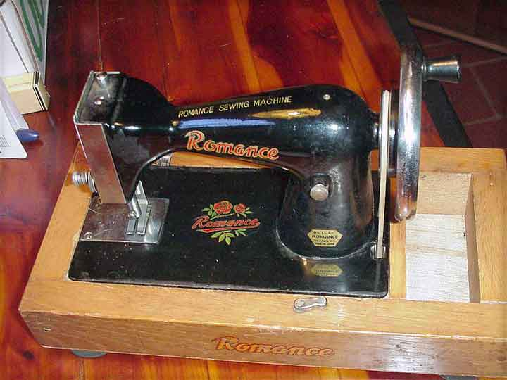

THE NEEDLEBAR
Yazawa Company
Romance
Chainstitch Toy Machine
(Imported to the US by National Toy Importers
of Los Angeles)
Pictures courtesy of Pat Spurr
Front View
Machine & Base

Logo
This page may not be reproduced
or distributed in part or in whole without the prior written permission of
the copyright owner